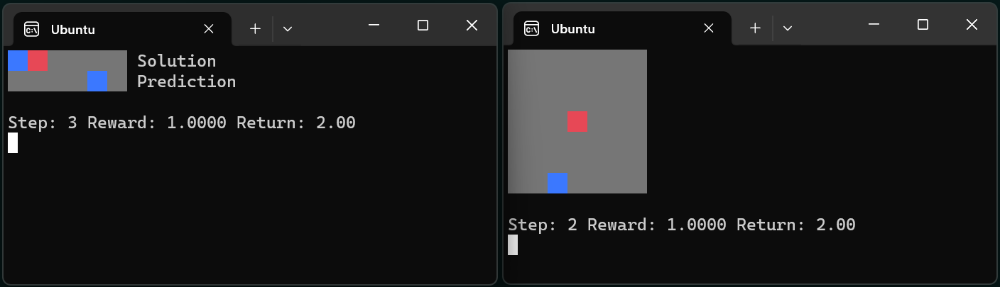

🌊 Ocean is PufferLib’s suite of first-party environments. They are small and can be trained from scratch in 30 seconds to 2 minutes. Use Ocean as a sanity check for your training code instead of overnighting heavier runs.
Squared#
- class pufferlib.environments.ocean.squared.Squared(distance_to_target=1, num_targets=- 1)
Pufferlib Squared environment
Agent starts at the center of a square grid. Targets are placed on the perimeter of the grid. Reward is 1 minus the L-inf distance to the closest target. This means that reward varies from -1 to 1. Reward is not given for targets that have already been hit.
Observation space: Box(-1, 1, (grid_size, grid_size)). The map. Action space: Discrete(8). Which direction to move.
- Parameters:
distance_to_target – The distance from the center to the closest target.
num_targets – The number of targets to randomly generate.
- reset(seed=None)
- step(action)
- render()
- close()
Password (exploration environment)#
- class pufferlib.environments.ocean.password.Password(password_length=5, hard_fixed_seed=42)
Pufferlib Password environment
Guess the password, which is a static binary string. Your policy has to not determinize before it happens to get the reward, and it also has to latch onto the reward within a few instances of getting it.
Observation space: Box(0, 1, (password_length,)). A binary vector containing your guesses so far, so that the environment will be solvable without memory. Action space: Discrete(2). Your guess for the next digit.
- Parameters:
password_length – The number of binary digits in the password.
hard_fixed_seed – A fixed seed for the environment. It should be the same for all instances. This environment does not make sense when randomly generated.
- reset(seed=None)
- step(action)
- render()
- close()
Stochastic#
- class pufferlib.environments.ocean.stochastic.Stochastic(p=0.75, horizon=1000)
Pufferlib Stochastic environment
The optimal policy is to play action 0 < p % of the time and action 1 < (1 - p) % This is a test of whether your algorithm can learn a nontrivial stochastic policy. Do not use a policy with memory, as that will trivialize the problem.
Observation space: Box(0, 1, (1,)). The observation is always 0. Action space: Discrete(2). Select action 0 or action 1.
- Parameters:
p – The optimal probability for action 0
horizon – How often the environment should reset
- reset(seed=None)
- step(action)
- render()
- close()
Memory#
- class pufferlib.environments.ocean.memory.Memory(mem_length=1, mem_delay=0)
Pufferlib Memory environment
Repeat the observed sequence after a delay. It is randomly generated upon every reset. This is a test of memory length and capacity. It starts requiring credit assignment if you make the sequence too long.
The sequence is presented one digit at a time, followed by a string of 0. The agent should output 0s for the first mem_length + mem_delay steps, then output the sequence.
Observation space: Box(0, 1, (1,)). The current digit. Action space: Discrete(2). Your guess for the next digit.
- Parameters:
mem_length – The length of the sequence
mem_delay – The number of 0s between the sequence and the agent’s response
- reset(seed=None)
- step(action)
- render()
- close()
Multiagent#
- class pufferlib.environments.ocean.multiagent.Multiagent
Pufferlib Multiagent environment
Agent 1 must pick action 0 and Agent 2 must pick action 1
Observation space: Box(0, 1, (1,)). 0 for Agent 1 and 1 for Agent 2 Action space: Discrete(2). Which action to take.
- reset(seed=None)
- step(action)
- render()
- close()
- observation_space(agent)
- action_space(agent)
Spaces#
- class pufferlib.environments.ocean.spaces.Spaces
Pufferlib Spaces environment
A simple environment with hierarchical observation and action spaces
The image action should be 1 if the sum of the image is positive, 0 otherwise The flat action should be 1 if the sum of the flat obs is positive, 0 otherwise
0.5 reward is given for each correct action
Does not provide rendering
- reset(seed=None)
- step(action)
- render()
- close()
Bandit#
- class pufferlib.environments.ocean.bandit.Bandit(num_actions=4, reward_scale=1, reward_noise=0, hard_fixed_seed=42)
Pufferlib Bandit environment
Simulates a classic multiarmed bandit problem.
Observation space: Box(0, 1, (1,)). The observation is always 1. Action space: Discrete(num_actions). Which arm to pull.
- Parameters:
num_actions – The number of bandit arms
reward_scale – The scale of the reward
reward_noise – The standard deviation of the reward signal
hard_fixed_seed – All instances of the environment should share the same seed.
- reset(seed=None)
- step(action)
- render()
- close()